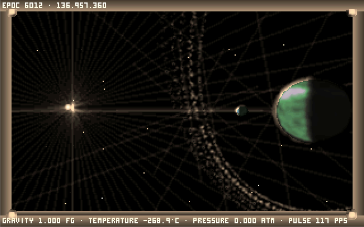
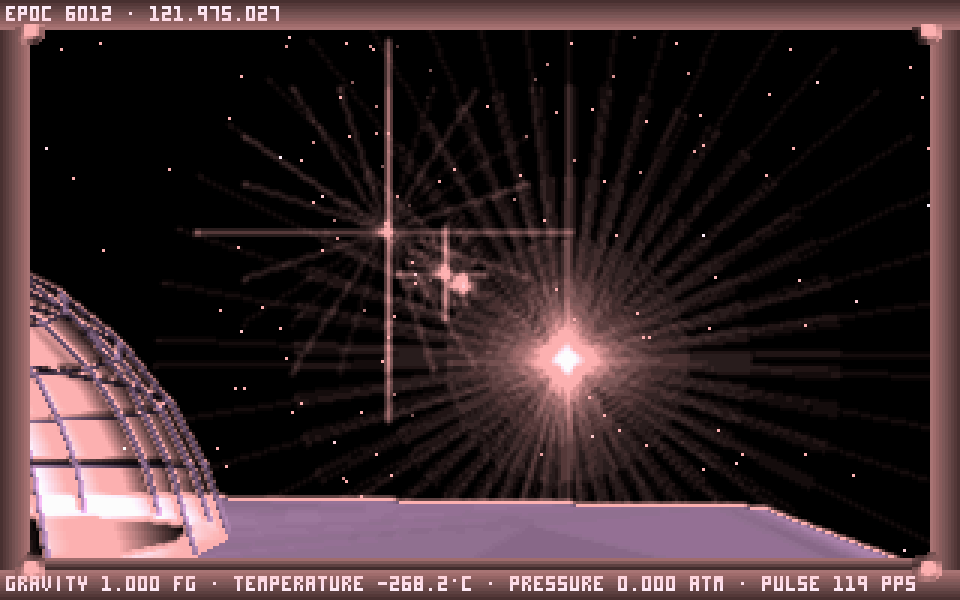
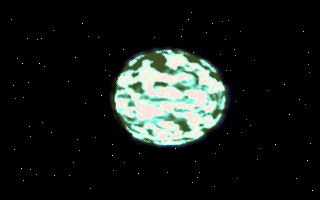
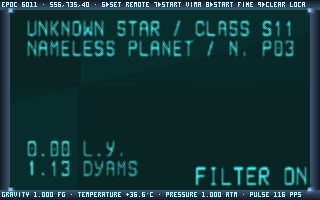
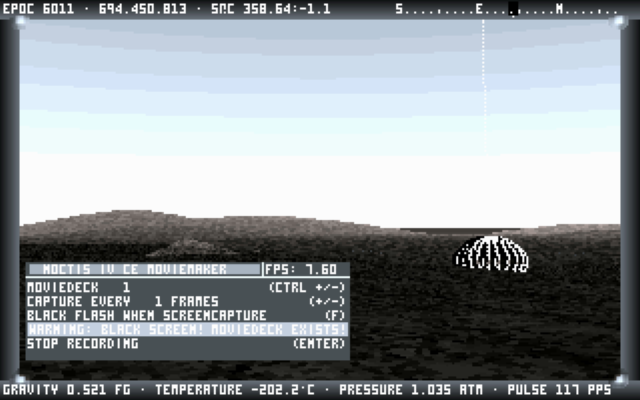

SIMULATION
One tick at a time
Engine-owned state, fixed 55 ms ticks, semantic input replay, and a 401-byte native save. The simulation does not care how fast the screen is drawn.
NOCTIS IV / OPEN MOVEMENT
A quiet galaxy, running natively.
Noctis IV OM is the 2000 space-exploration classic, brought forward as a native game. It pairs the feature set of Noctis IV Plus with the native C++ foundation of Noctis IV LR: a deterministic galaxy, a living ship, and no DOSBox between you and the dark.
GENERAL AVAILABILITY3.2.0

Independent community hybrid. Original Noctis IV by Alessandro Ghignola, 2000. Built from Noctis IV Plus and Noctis IV LR, with their contributors and licenses preserved. Credits.
THE QUIET
A vast, procedural galaxy, an analogue starship, and the next coordinate. You read the instruments, pick a point of light, and set out into the dark to see what awaits.
When Alessandro Ghignola released Noctis IV in 2000, he built something singular: a space simulator with billions of stars generated deterministically from pure mathematical coordinates. You awaken as a Felysian stardrifter aboard a living biological vessel, free to wander anywhere across the cosmos.
The exploration loop is contemplative, atmospheric, and quiet. Read the stellar spectral class and distance. Engage the sub-light Vimana drive across the void. Deploy the planetary capsule down into an alien atmosphere, walk across an untouched horizon, and leave an entry in the starmap for the next explorer.
Noctis IV OM revives this experience for modern hardware. It unites the expanded features of Noctis IV Plus (panoramas, Moviemaker, celestial catalogs) with the native C++20 architecture of Noctis IV LR—running seamlessly on modern desktop systems and directly in the browser.
The galaxy is computed, not stored. The same coordinate can produce the same world again.
Pure exploration. A quiet, contemplative journey where your curiosity is the only navigation marker.
Star class, distance, atmosphere, gravity.
Lock a target in GOESnet.
Vimana sub-light, or a lithium jump.
Capsule down. Pick a site.
Name the world. Leave a note.
FIRST FLIGHT
Noctis does not put a marker on the next objective. The ship is the interface. This is the shortest reliable route from a cold launch to standing on Felysia.
WASD moves; the mouse looks. The central console is the flight computer. The right-hand bulkhead holds the GOESnet terminal and the planetary atlas. F1 brings up the in-cockpit reminder.
At the GOESnet console, type HELP for the syntax if you need it, then ST BALASTRACKONASTREYA. That locks the Felysian home system as your remote target.
At the central console, press 5 for flight control, then 7 to engage the Vimana drive. The distance counter is the only progress bar you get.
In the destination system, open the planetary list on the left terminal. Press 5, then 8 for local approach. Read gravity, pressure, and atmosphere before you commit.
Press 5, then 9 for the surface capsule. In the atlas, move the landing reticle with the arrow keys and press Enter.
WASD to walk, L for the suit torch, V to cycle the visor, Space to fire the jetpack. Walk back into the capsule to return to orbit.
If you get lost: F1 opens the in-cockpit help, Esc releases the mouse, F10 locks it again, and F11 toggles fullscreen. The full key list is in the Command & Systems Codex.
UNDER THE HULL
The surface is deliberately 1990s: a 320×200 indexed framebuffer, flat-shaded polygons, a palette. Under it is a C++20 engine with fixed-tick simulation, explicit platform seams, and compatibility fixtures that decide what “finished” means.
Noctis IV has captivated nerds for decades, but keeping a DOS-era assembly and C codebase alive on modern hardware is notoriously demanding. After spending months reverse-engineering Sierra’s SCI engine, I saw the monumental porting work started by the community and asked myself two simple questions: Can I do this? and Why wouldn't I?
The original DOS executable and the LR porting baseline serve as our exact behavioral specification. Every planetary formula, star seed, and flight calculation is pinned against automated test fixtures to guarantee total historical fidelity, compiled natively to modern C++20 and WebAssembly.
Subtle, handcrafted visual enhancements—Rayleigh and Mie atmospheric scattering, day/night terminators, limb-darkened stars, procedural coronal streamers, and a physically modeled suit torch—sit cleanly atop the simulation without altering its underlying mathematical seeds.
| Language | C++20, CMake, Raylib, GLM; dependencies pinned through CPM. |
|---|---|
| Simulation | Fixed 55 ms ticks. Presentation advances independently. |
| Galaxy | Coordinate-seeded. DOS-compatible PRNG. Twelve stellar classes. |
| Renderer | 8-bit indexed framebuffer, software rasterizer, Scale2x and CRT shader. |
| Audio | miniaudio, a 4-voice generative synth, and a 6-channel mixer. |
| Saves | 401-byte native v1; legacy profile migration; atomic replacement. |
| Targets | Linux x86-64 (Wayland/X11), Windows x86-64, WebAssembly/WebGL2. |
| Tests | 57 CTest suites on Linux Clang/GCC and ASan/UBSan. |
Determinism, precisely. Stars, systems, and surface seeds are pinned against the DOS reference. A few rasterized surface pixels still differ between compilers because of floating-point rounding; those hashes are accepted explicitly per platform and enforced in CI. Read Known issues .
SIMULATION
Engine-owned state, fixed 55 ms ticks, semantic input replay, and a 401-byte native save. The simulation does not care how fast the screen is drawn.
PRESENTATION
An 8-bit indexed framebuffer and software polygon renderer, scaled by crisp pixels, Scale2x, or a CRT shader. 4:3, 16:10, and 16:9 are deliberate choices.
PLATFORM
Raylib and GLFW on the desktop; Emscripten and WebGL2 in the browser; miniaudio underneath. The procedural core is shared, not forked.
Go deeper: blueprint roadmap decisions provenance
OBSERVATIONS
Reference frames from the project, scaled with nearest-neighbour pixels. The 320×200 originals are game frames, not a filter.




Reference frames from the project's image set. The browser build presents the same indexed framebuffer through WebGL2. Screenshots are not concept art.
COCKPIT CARD
The game has no HUD tutorial. These are the keys you will use before the Codex makes sense. The full list is in the Command & Systems Codex.
A / CABIN & MOVEMENT
B / SHIP COMPUTER
C / PLANETFALL
D / DISPLAY & MEDIA
RELEASE
The current stable release. Native builds are portable and self-contained; the browser build saves to IndexedDB in this browser. No installer, no account, no DOSBox.
GENERAL AVAILABILITY
Noctis IV OM 3.2.0
Released 2026-10-06 · Browser Moviemaker & WebM
IN THIS RELEASE
Full details in the changelog and release page .
BEFORE YOU DOWNLOAD
| Platform | Artifact | Size | Get it |
|---|---|---|---|
| Windows 10/11 X86-64 | Noctis-IV-OM-windows-x86_64.zip |
8.3 MB | Download SHA-256 |
| Linux X86-64 | Noctis-IV-OM-linux-x86_64.tar.gz |
3.0 MB | Download SHA-256 |
| Browser WEBGL2 | play/ · ~7.6 MB runtime |
No install | Launch |
| Web SELF-HOST | Noctis-IV-OM-web.zip |
2.3 MB | Download SHA-256 |
Extract the ZIP anywhere writable. Run nivlr.exe. Saves, catalogs, screenshots, and movie decks stay inside the extracted folder.
Extract, then run ./nivlr. If the desktop is minimal, install the runtime libraries listed in PACKAGE_README.md .
Click Launch. Progress autosaves in IndexedDB. Use the top-bar EXPORT/IMPORT STARMAP buttons to move discoveries between browsers.
Bringing an old profile forward? Keep the old folder as a backup, then run ./nivlr --prepare-user-data --migrate-from "/path/to/old Noctis folder". The importer copies recognized saves, catalogs, screenshots, and movie decks; it never deletes the source or overwrites a destination file.
SOURCE
The repository is the full source, tests, and porting record. The build is CMake; the dependency revisions are pinned; the first configure downloads Raylib and GLM unless they are already cached.
$ cmake --preset linux-clang-debug $ cmake --build --preset linux-clang-debug --parallel $ ctest --preset linux-clang-debug --output-on-failure $ cd build/linux-clang-debug && ./nivlr
Ubuntu packages, GCC, sanitizers, Windows/MSVC, MinGW cross-compilation, and packaging are in the build guide .
REPOSITORY
src/ C++20 engine and game res/ immutable runtime resources data/ pinned starmap and guide docs/porting/ blueprint, roadmap, decisions manual/ the Stardrifter's Codex tests/ determinism and compatibility cmake/ pinned dependencies and packaging
Contributions should preserve deterministic behavior and bring evidence. Start with the earliest incomplete roadmap item ; run at least one full native lane. See CONTRIBUTING.md .
Source and releases: the repository carries the full history, the original licenses, and the porting record.
Open the repositoryQUESTIONS
It is an independent community hybrid of Noctis IV Plus and Noctis IV LR, built to faithfully recreate the original game's behavior on modern systems. Alessandro Ghignola created Noctis IV; this project preserves his full authorship and original WTOF license terms.
No. The release archives are completely self-contained and run natively as modern C++20 or WebAssembly binaries. The original DOS executable serves as a behavioral verification reference during development, not a runtime dependency.
Open Movement: the community continuation pairing Plus's rich feature set with LR's native C++ architecture, bringing the galaxy forward into the modern era.
Windows x86-64, Linux x86-64 with X11 or Wayland, and WebAssembly in a browser with WebGL2. There is no native macOS build yet; the browser build is the current route on macOS.
Native builds can migrate a portable DOS/Plus profile with ./nivlr --prepare-user-data --migrate-from "/path/to/old Noctis folder". The importer never overwrites a destination file. Browser saves live in that browser's IndexedDB and are separate from desktop profiles.
Stars, systems, and surface seeds are pinned against the DOS reference, and the accepted per-platform results are enforced in CI. A few rasterized surface pixels can differ across compilers because of floating-point rounding; those differences are explicit, not ignored. Read known issues .
The game renders at 320×200 internally, as the original did. It scales with crisp pixels, Scale2x edge-directed upscaling, or a CRT shader. The low resolution is the look, not a limitation of the port.
Yes, under the original WTOF terms and the project's provenance conditions. Keep the credits and license texts with any redistribution. The provenance register records the evidence.
COLOPHON
Noctis IV was created by Alessandro Ghignola in 2000. This project preserves and honors the foundational work of Ghignola, Noctis IV Plus, Noctis IV LR, and their open-source contributors.
Noctis IV OM is an independent community continuation stewarded by Andrew Edmark, bridging the gap between retro procedural ambition and modern systems. Full licenses, contributor histories, and original provenance records are documented throughout the repository.
This page is a static field manual: no trackers, no external fonts, no CDN. Every asset is served from this repository; nothing on the page calls a third party.